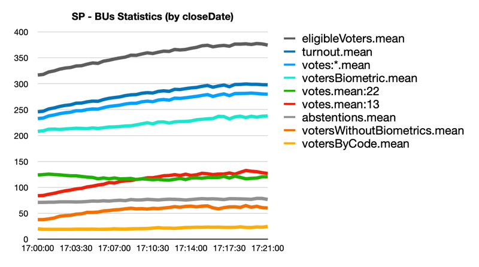
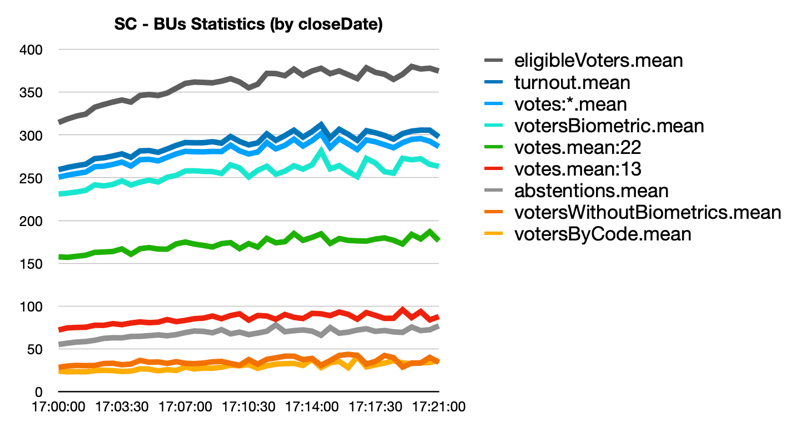

Original text
Contribute a better translation
Eleição Brasileira - 2022/10/02
Trata-se de uma análise estatística dos arquivos da BU do estado de São Paulo (SP).
BUsignifica "Boletin de Urna" (urna de voto).Todas as análises são baseadas em dados públicos disponíveis das Máquinas de Votação do pleito no Brasil do site do TSE: http://resultados.tse.jus.br
Para o estado de São Paulo (SP) 101071foram analisados os arquivos da BU (99,9% de todos os arquivos da BU disponíveis).
presidente0.216125655938(votos válidos: ignorando blanke nullvotos)10107122
12239783( 47.71%)101067(com votos para este candidato).13
10489884( 40.89%)101071(com votos para este candidato).As métricas analisadas são:
closeDate:
closedata.
closeDate(último voto) de uma Máquina de Votação influencia a taxa de votação de um candidato.generationDate:
generationdata.
generationDateurna de uma máquina de votação influencia a taxa de votação de um candidato.emissionDate:
emissiondata.
emissionDateurna de uma máquina de votação influencia a taxa de votação de um candidato.loadDate:
loaddata.
votersReleasedByCodeRatio:
votersReleasedByCodeRatio.
onlyPresidentVotesRatio:
onlyPresidentOfficeVotesRatio.
Você pode encontrar um arquivo CSV para cada métrica analisada:
./bu-statistics--sp--$METRIC.csv:closeDate(principal anomalia)A principal "anomalia" estatística pode ser encontrada na closeDatemétrica para presidente.
A closeDateé a data e hora em que a máquina de votação fecha no dia da eleição. Isso é definido pela hora do ÚLTIMO voto na urna ( também o ÚLTIMO voto para influenciar o arquivo BU ).
A definição formal no arquivo bu.asn1é:
closeDate: dataHoraEncer: Data e hora do termo da aquisição do voto (YYYMMThhmmss) no formato adotador pela Justiça Eleitoral (YYYMMThhmmss).O processo do mundo real para "fechamento" da urna depende de uma operação de fechamento iniciada manualmente pelo operador da urna, que deve acontecer logo após a última votação.
Se tudo ocorrer normalmente em uma seção de votação, a urna é fechada às 17:00, e a última votação deve ocorrer próximo a esse horário.
No estado de São Paulo os 101071arquivos da BU (um para cada urna) foram analisados, totalizando 25655938votos para presidente.
Nesta métrica ordenamos as BUs por closeDate. Das 17:00BUs 17:10fechadas terão
72.43%de todos os votos no estado, com 18583664votos nas 75756BUs.
Após ordenar as BUs closeDateseparamos em blocos de 30s, então calculamos as estatísticas de votação do bloco de 30s (não cumulativo).
17:00:00 - (Candidate 22: 545029 votes 53.19%) ; (Candidate 13: 369012 votes 36.02%) ; (total votes: 1024592 3.99% ; abstentions: 22.41%)17:05:00 - (Candidate 22: 378934 votes 47.42%) ; (Candidate 13: 325173 votes 40.69%) ; (total votes: 14205687 55.37% ; abstentions: 21.64%)17:10:00 - (Candidate 22: 114929 votes 43.47%) ; (Candidate 13: 117562 votes 44.47%) ; (total votes: 18583664 72.43% ; abstentions: 21.38%)É muito fácil ver que o percentual de votação para candidato 13passou de 36%para 44%
em 10min (com 18583664 do total de votos e 72% de todos os votos disponíveis). Para o candidato
22passou de 53%para 43%.
A questão principal é que closeDatenão é o tempo de cálculo pelo computador do TSE, mas o tempo real da última votação e da operação de fechamento em cada urna. Isso é IMPOSSÍVEL de acontecer em um mundo real, pois uma porcentagem MUITO ALTA de BUs precisará ser coordenada para que a operação de fechamento na Máquina de Votação aconteça exatamente na mesma distribuição dos resultados na Máquina de Votação para o candidato 13 (de 36%para 44%). Seria necessário conhecer a priori o resultado de cada Máquina de Votação para incluir o último voto na ordem correta das Máquinas de Votação.
Como estamos falando de um evento de apenas 10min, 75756BUs e 18583664de votos (um voto por pessoa no dia) , é IMPOSSÍVEL ter esse comportamento no mundo real sem quebrar a integridade das Máquinas de Votação e sem ter a participação ativa de milhares de pessoas para gerar esse closeDatecomportamento.
Aqui estão os primeiros 10 minutos do arquivo CSV para a closeDatemétrica:
bu-statistics--sp--closeDate.csv:
| data de encerramento | proporção: 22 | proporção: 13 | votos: 22 | votos: 13 | votos:* | ônibus | vire para fora | abstenções | Índice de abstenção | votantesW/oBiom.mean | total | totalRatio |
|---|---|---|---|---|---|---|---|---|---|---|---|---|
| 17:00:00 | 0,5319 | 0,3602 | 545029 | 369012 | 1024592 | 4403 | 1081960 | 312508 | 0,2241 | 37.6893 | 1024592 | 0,0399 |
| 17:00:30 | 0,5331 | 0,3607 | 935715 | 633197 | 1755296 | 7509 | 1853732 | 533225 | 0,2234 | 37,7829 | 2779888 | 0,1084 |
| 17:01:00 | 0,5277 | 0,3645 | 978305 | 675654 | 1853807 | 7796 | 1958942 | 556199 | 0,2211 | 39.0747 | 4633695 | 0,1806 |
| 17:01:30 | 0,5205 | 0,3694 | 875198 | 621159 | 1681477 | 7015 | 1776777 | 500792 | 0,2199 | 40,8778 | 6315172 | 0,2461 |
| 17:02:00 | 0,5124 | 0,3760 | 801159 | 587892 | 1563479 | 6455 | 1652913 | 464824 | 0,2195 | 44.2830 | 7878651 | 0,3071 |
| 17:02:30 | 0,5046 | 0,3823 | 687946 | 521232 | 1363313 | 5589 | 1442363 | 402836 | 0,2183 | 45.4366 | 9241964 | 0,3602 |
| 17:03:00 | 0,4993 | 0,3870 | 617503 | 478658 | 1236732 | 5048 | 1308617 | 363639 | 0,2175 | 45.9509 | 10478696 | 0,4084 |
| 17:03:30 | 0,4934 | 0,3912 | 537492 | 426138 | 1089377 | 4395 | 1153053 | 315410 | 0,2148 | 48,2858 | 11568073 | 0,4509 |
| 17:04:00 | 0,4882 | 0,3955 | 467084 | 378421 | 956838 | 3861 | 1014121 | 278180 | 0,2153 | 48.9218 | 12524911 | 0,4882 |
| 17:04:30 | 0,4791 | 0,4033 | 422384 | 355564 | 881624 | 3526 | 934212 | 256274 | 0,2153 | 51.7147 | 13406535 | 0,5226 |
| 17:05:00 | 0,4742 | 0,4069 | 378934 | 325173 | 799152 | 3181 | 847335 | 233998 | 0,2164 | 51.6784 | 14205687 | 0,5537 |
| 17:05:30 | 0,4645 | 0,4165 | 318909 | 285990 | 686615 | 2736 | 727772 | 200512 | 0,2160 | 52.3154 | 14892302 | 0,5805 |
| 17:06:00 | 0,4654 | 0,4174 | 279008 | 250226 | 599499 | 2362 | 636380 | 174808 | 0,2155 | 54.5059 | 15491801 | 0,6038 |
| 17:06:30 | 0,4553 | 0,4265 | 239231 | 224091 | 525386 | 2052 | 557622 | 150824 | 0,2129 | 55.2729 | 16017187 | 0,6243 |
| 17:07:00 | 0,4589 | 0,4211 | 226740 | 208061 | 494048 | 1920 | 524576 | 142979 | 0,2142 | 56.5354 | 16511235 | 0,6436 |
| 17:07:30 | 0,4502 | 0,4299 | 196948 | 188068 | 437509 | 1692 | 464587 | 126995 | 0,2147 | 57.2606 | 16948744 | 0,6606 |
| 17:08:00 | 0,4470 | 0,4324 | 177433 | 171646 | 396935 | 1522 | 421668 | 113090 | 0,2115 | 58.6104 | 17345679 | 0,6761 |
| 17:08:30 | 0,4469 | 0,4317 | 157426 | 152061 | 352276 | 1344 | 374234 | 102765 | 0,2154 | 59.7329 | 17697955 | 0,6898 |
| 17:09:00 | 0,4391 | 0,4394 | 141773 | 141868 | 322882 | 1231 | 343516 | 93084 | 0,2132 | 58.5491 | 18020837 | 0,7024 |
| 17:09:30 | 0,4393 | 0,4391 | 131108 | 131057 | 298462 | 1126 | 317010 | 85285 | 0,2120 | 58.9547 | 18319299 | 0,7140 |
| 17:10:00 | 0,4347 | 0,4447 | 114929 | 117562 | 264365 | 993 | 280689 | 76326 | 0,2138 | 58.0916 | 18583664 | 0,7243 |
closeDatebloco de 30s é muito pequeno nas BUs para análise estatística.absten.Ratioe votersW/oBiom.meanos nomes das colunas foram "abreviados" para reduzir a largura da tabela em PDF.bu-statistics--sp--closeDate.csvpara colunas extras.bu-statistics--sp--closeDate--commadec.csvse você precisa de vírgula ( ,) como delimitador decimal.Colunas CSV:
closeDate: O tempo de bloqueio das BUs ( closeDatejanela por e 30s).ratio:22: Taxa de votos por candidato 22(não cumulativa).ratio:13: Taxa de votos por candidato 13(não cumulativa).votes:22: Votos de candidato 22(não cumulativos).votes:13: Votos de candidato 13(não cumulativos).votes:*: Votos para todos os candidatos (não cumulativos).bus: Número de arquivos BU no bloco.turnout: O número total de pessoas votando.abstentions: O número de abstenções (pessoas que não compareceram à eleição).abstentionsRatio: A proporção de abstenções.votersWithoutBiometrics: Número de votos sem identificação biométrica.total: Número total de votos (cumulativos).totalRatio: Proporção de totalvotos (cumulativa).Você pode ver na imagem abaixo um gráfico com os dados no bu-statistics--sp--closeDate.csvarquivo.

Se comparado com o estado de Santa Catarina (SC) a anomalia em SP é bem visível:

O que a comparação mostrou:
votersWithoutBiometricsé muito maior.abstentionsem SP é uma linha reta (não segue a proporção de Eleitores elegíveis nas BUs).eligibleVoters.mean: O número total de eleitores elegíveis na BU (média por BU).turnout.mean: O número total de pessoas votando (média por BU).votes:*.mean: A média do total de votos válidos por BU.votersBiometric.mean: Número de votos com identificação biométrica (média por UN).votes.mean:22: A média de eleitores por BU por candidato 22.votes.mean:13: A média de eleitores por BU por candidato 13.abstentions.mean: O número de abstenções (média por UN).votersWithoutBiometrics.mean: Número de votos sem identificação biométrica (média por UN).votersByCode.mean: Número de votos com falha na identificação biométrica e divulgados por código (média por BU).closeDate: O tempo de bloqueio das BUs ( closeDatejanela por e 30s) (Eixo X).Licença MIT
Os autores desta análise trabalharam arduamente para dar um trabalho totalmente reprodutível, o que legitima os dados e a análise destes dados eleitorais.
Este trabalho foi verificado por pessoas em diferentes grandes universidades do Brasil, EUA e Suíça.
Se necessário, este endereço será utilizado para garantir a autoria do trabalho:
1Gh5Qtc7UpLt31Ma85HwZLduGwPFHFS2AH